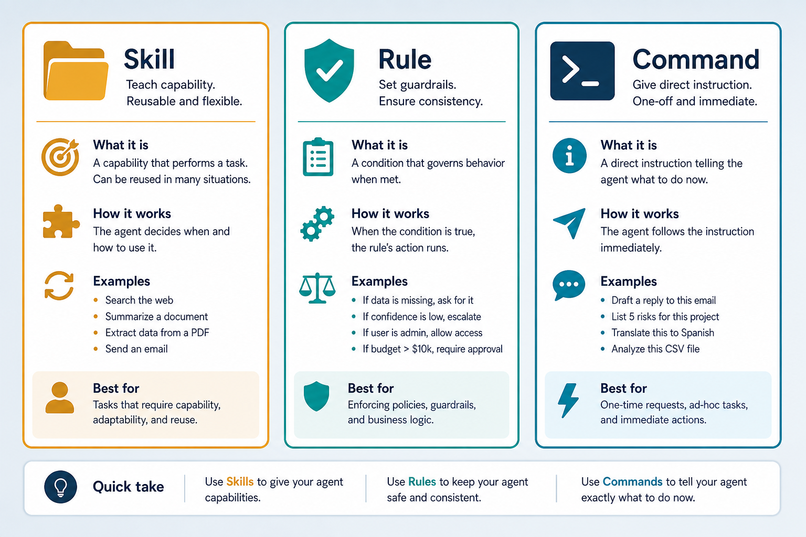
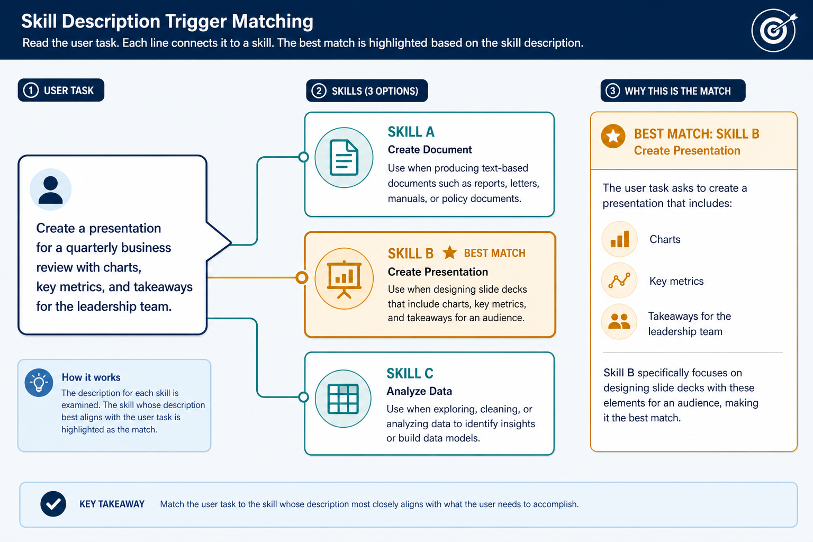

Skills · Rules · Commands · configure the agent
Three layers teach a coding agent: toolboxes on demand, house laws always on, and buttons you press.
Same model, better behavior
Conventions stick
Mandatory things live always-on — no re-explaining every turn.
Process on demand
Complex workflows load only when the description matches.
One-shot shortcuts
Frequent flows start with a typed slash — no essay required.
Key ideas
Catalog → body
Model sees name+description first; vague triggers miss or storm. Put disambiguation in description.
Token budget
Always-rules tax every turn. Prefer short always → globs → deep skills → /commands.
~/.agents only
Write once across clients. Empty Cursor/Claude skill dirs; Pi = symlinks.
Keywords: SKILL.md · ~/.agents · AGENTS.md · Read: notes/skills-rules.md
Skill vs Rule vs Command
| Kind | What | When loaded | Example |
|---|---|---|---|
| Skill | SKILL.md (+ scripts/assets) | Task matches description | graphify, frontend-slides |
| Rule | Always or glob instructions | Every turn / matching files | commit style, notes-first |
| Command | Prompt / workflow shortcut | User types it | /graphify ., /loop |
Description is the trigger
~/.agents/skills/<name>/SKILL.md --- name: <name> description: Use when X/Y/Z (artifacts: .pptx). Do not use for ordinary notes. --- # steps + scripts; progressive disclosure → references/
Positive + negative triggers cut false positives — bury disambiguation only in the body and the wrong skill wins.
One global home across clients
~/.agents/skills
Write once — Cursor, Claude, and Pi discover from here.
Don’t duplicate
Keep ~/.cursor/skills and ~/.claude/skills empty; Pi uses symlinks only.
skill.sh packs
GitHub packs via custom manager — not npx skills for ~/.agents.
AI Lab, notes-first
notes/** glob
Notes-first only when note files touched — not every TS edit.
frontend-slides
“Build a deck” matches; vague “docs” skill may fight over format.
Context trade
150-line always × every turn > 400-line skill loaded twice/week.
Skill vs Rule vs Command

Toolboxes you open, laws on the wall, buttons you press — three different loading times.
Three layers side by side

Mandatory in rules · complex process in skills · frequent workflow in commands.
Skill description is the auto-trigger

Catalog shows name + description; the body loads only after the model chooses that skill.
Keep always-rules short
~50–100 lines always
Beyond that, half likely belongs in a skill. >500–1000 line skills → link out.
Glob when possible
*.tsx / notes/** load only on matching files — cheaper and clearer.
Deeper dive
Trigger pattern
Use when X/Y/Z (artifacts…). Do not use for… — positive + negative cuts false positives.
Catalog vs body
If disambiguation is only in the body, the wrong skill gets selected first.
Progressive disclose
“Read references/foo.md only if bar” — avoid stuffing the whole tree every trigger.
skill.sh
install owner/repo --id · sync · check. Parallel ~/.cursor/skills defeats one source of truth.
Silent non-trigger
“Make slides” but description only says PPTX export → freestyle worse deck.
Trigger storm
Five search skills match “research X” → context pressure + contradictory rules.
When to choose what
| Situation | Prefer | Avoid / why |
|---|---|---|
| Must never violate | Short always or glob rule | Only in a skill — may not load |
| Multi-step specialized workflow | Skill with crisp description | Always-rule novel — tokens forever |
| Rare expensive ritual | Command (/graphify, /deep-plan) | Auto-skill that surprises mid-chat |
| Convention for *.tsx / notes/** | Glob rule | Global always for file-local style |
| Two skills overlap on search | Tighten descriptions; document precedence | Both vague — trigger storms |
| Share across Cursor / Claude / Pi | Single tree in ~/.agents/skills | Copy-paste into client folders |
Easy to go wrong
Novel always-rules
Waste context every turn — move depth into skills.
Vague descriptions
Never auto-triggers, or triggers on everything.
Duplicate trees
Copying into Cursor/Claude folders → drift and conflicts.
How a turn is configured
Agent acts with MCP/tools under the loaded configuration — not a blank model.
Where to go next
MCP
How skills call external tools and servers.
Agents note
Harnesses, roles, and multi-step loops.
MCP app
See tool calling in the browser demo.
Read the note
then configure.
notes/skills-rules.md — related demo: demos/mcp.
Open note →